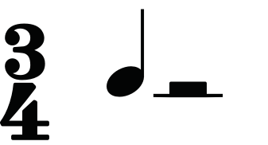
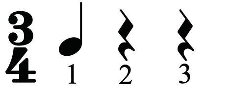
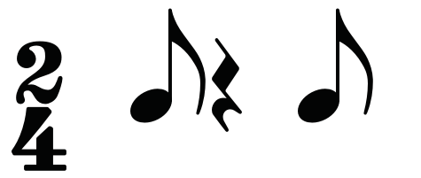
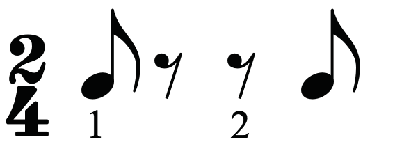
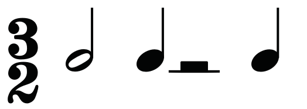
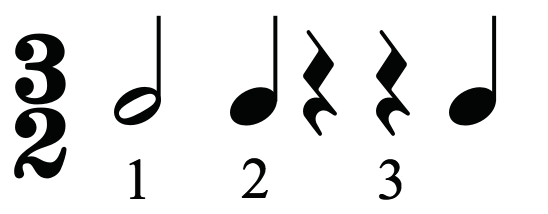
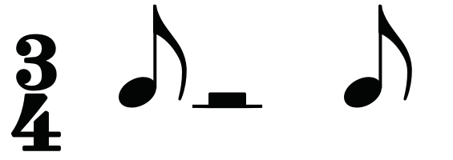
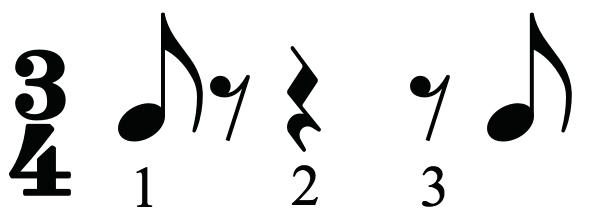
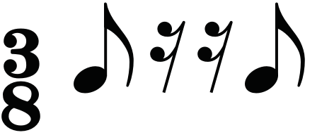
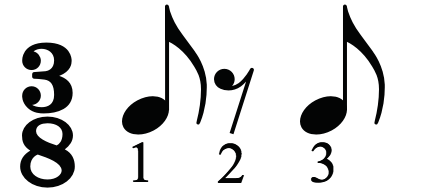

Figure 1.46: Correct and incorrect rests to represent the main beat in three-four time
(b) A correct rest sign for a particular beat should be used:When a rest sign is used in a bar, it should equivalently represent a particular beat to complete a bar.Figures 1.47, 1.48 and 1.49 show correct and incorrect rest signs for particular beats in different time signatures.


Figure 1.47: Correct and incorrect rests to complete a beat in two-four time


Figure 1.48: Correct and incorrect rests to complete a beat in three-two time


Figure 1.49: Correct and incorrect rests to complete a beat in three-four time
(c) There should not be use of many rests to represent a beat:Where possible, it is better to avoid using many rests to represent a beat.Each rest used should represent a particular beat.Figures 1.50 and 1.51 show incorrect and correct uses of rests to represent a beat.


Figure 1.50: Incorrect and correct use of rests to represent a beat in three-eight time